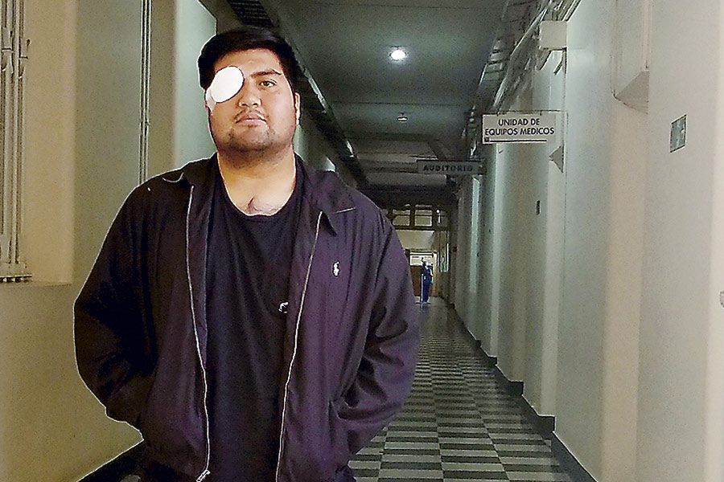
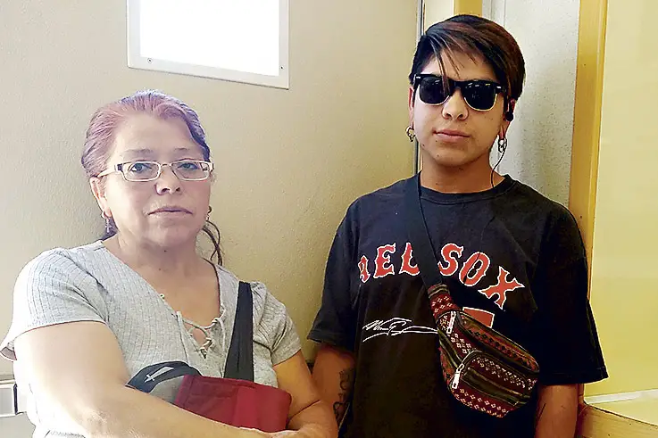

Desde el 19 de octubre hasta el 3 de diciembre, la Sociedad Chilena Oftalmológica contabiliza 259 casos de pacientes con lesiones oculares en la UTO del Hospital del Salvador. Dos personas perdieron completamente la visión.
"Ya me confirmaron que es muy poco probable que vuelva a ver", dice Francisco Garrido (20). El joven se dirigía junto a un amigo a la marcha convocada en el frontis de La Moneda el lunes 28 de octubre. La presencia policial -sin embargo- no permitió que la multitud llegara al lugar de concentración y Garrido quedó a la altura del Metro Los Héroes. Cerca de las 20.30 horas -según recuerda- Carabineros comenzó a usar escopetas antidisturbios y sintió un golpe en su ojo derecho.
Garrido recibió primeros auxilios de voluntarios, pero los desórdenes continuaban y decidió tomar una micro hacia su casa, en Renca. Allí, fue al servicio de atención primaria y lo derivaron al Hospital San Juan de Dios, donde pasó la noche. A la mañana siguiente lo trasladaron en ambulancia a la Unidad de Trauma Ocular (UTO) del Hospital del Salvador.
Un mes después, Garrido ya perdió la cuenta de cuantas veces ha tenido consulta en la UTO, donde fue operado.
Está sentado en el piso de la sala de espera con los lentes de sol que lo acompañan desde el primer día. Su madre, Cecilia, se encuentra a su lado.
En la unidad hay solo un médico especialista. Según informan los funcionarios, el otro profesional de turno está en el quirófano.
"Aún tengo coágulos de sangre por dentro que no me permiten ver nada y me dicen que no me pueden operar de nuevo porque el riesgo es muy grande. No tengo un pronóstico bueno, pero quizás pueda recuperar parte de la vista", comenta Garrido, quien se aplica diariamente tres tipos de gotitas diferentes. Una cada cuatro horas, otra cada seis y la última, una vez. La lesión también ha afectado su movilidad. "Me cuesta de repente tomar las cosas. No puedo hacer fuerza, tampoco agacharme, saltar ni correr. Cualquier cosa que haga puede afectar mi ojo", señala.
Según datos de la Sociedad Chilena de Oftalmología, desde el 19 de octubre al 3 de diciembre han llegado 259 casos de pacientes con daño ocular en el contexto de manifestaciones a la UTO del Hospital del Salvador, la central de tratamiento oftalmológico más importante del país.
Los casos más graves son el de Gustavo Gatica (21), quien perdió la vista de ambos ojos por herida de balines, y el de Fabiola Campillai (36), impactada en su rostro por una bomba lacrimógena, con igual lesión.
Del total de pacientes, 227 (88%) son hombres y 32 (12%) mujeres y el rango de edad de los afectados varía entre los 13 y los 70 años, con 30 años de promedio.
De los casos registrados, 49 (19,3%) presentaron traumatismo ocular con globo abierto, es decir, ruptura de la pared del ojo. El principal motivo de estas lesiones fue producto de herida por balines (70%).
Hasta el 3 de diciembre se habían realizado 13 cirugías de evisceración ocular.
En dicha intervención, los médicos deben vaciar el ojo y poner un implante de silicona. Sergio Morales, jefe de la UTO, explica que, en esos casos, la primera etapa es para desinflamar el ojo y evitar infecciones. La segunda etapa se basa en reparar los párpados y las estructuras externas. Luego, en una tercera etapa, se inicia el proceso para adaptarles una prótesis. "Esta sanación es para toda la vida. La persona que pierde un ojo y usa una prótesis, cada cierto tiempo tiene que estar chequeando que esta no se le suelte, no se le infecte, no se dañe, y se mueva acorde con los músculos", agrega el oftalmólogo.
Según los especialistas, todos los heridos requieren de aproximadamente tres meses para recuperarse de la lesión ocular, en algunos casos seis meses o incluso un año, cuando el daño es más complejo y el paciente no responde bien al tratamiento. Además, deben tomar analgésicos, antibióticos y aplicarse gotitas. En paralelo, deben iniciar un proceso de rehabilitación con apoyo sicológico y emocional para sobrellevar de mejor manera la pérdida de la visión o del órgano.
Morales detalla que en el caso de los lesionados, más de 70 de ellos son por perdigones. Y las probabilidades de que los heridos recuperen la vista son muy bajas. "El 60% -de los 259 lesionados- tiene menos del 5% de probabilidades de recuperar la visión", asegura.
"Me da miedo preguntar qué pasará con mi ojo. No sé si quiero saberlo", dice Abraham Levio (21). Han pasado 10 días desde que recibió varios perdigones en su pecho, brazo y el impacto de un "elemento extraño" en su ojo derecho. Levio cuenta que la madrugada del lunes 25 de noviembre, poco después de las 00.00 salió a comprar junto a una amiga cerca de su casa, en el barrio Lo Hermida, en Peñalolén.
Recuerda que pasó por un lugar donde había barricadas y un grupo de personas le gritaba a Carabineros. Fue entonces que sintió los impactos y un dolor muy fuerte en su ojo.
Su amiga lo llevó al Sapu más cercano. Allí le limpiaron las heridas y le dijeron que a primera hora de la mañana debía ir a la UTO. "No veía casi nada, solo distinguía colores", señala Levio.
Antes de las 9.00 am llegó al recinto asistencial. Fue solo. "No le quise pedir a mi papá que me acompañara porque estaba muy enojado conmigo. Pensaba que me pasó esto por estar protestando. No me creía que no estaba en la manifestación. Yo solo pienso en la mala suerte que tuve", dice.
Levio fue operado de urgencia. Ese día se fue tranquilo, pensaba que todo estaría bien. Pero cuando al día siguiente fue a consulta le explicaron que no le pudieron extraer lo que al parecer era un balín de goma, debido a la profundidad en la que se encontraba.
El jefe de la UTO explica que según sus cálculos, en promedio, los pacientes deben ser controlados al menos seis veces cada uno, sin considerar eventuales cirugías, por lo que se van a generar más de mil consultas en los próximos siete meses, adicionales al trabajo normal.
La unidad cuenta con 20 médicos especialistas y en cada turno usualmente había dos oftalmólogos. Morales cuenta que hasta ahora "esto se ha solucionado con el apoyo de todos los colegas que han venido voluntariamente de forma gratuita a reforzar turnos". No obstante, se considera la incorporación de más funcionarios.
"En la dirección está el proceso de contratación de otros profesionales para brindar ayuda en la parte de reparación cosmética de los pacientes traumatizados. Aparentemente se va a contratar a un protesista, un asistente social, un terapeuta ocupacional y dos tecnólogos médicos con mención en oftalmología", señala.
El 29 de noviembre, Francisco Garrido recibió la noticia que no quería escuchar: las probabilidades de recuperar la visión de su ojo derecho son casi nulas. El joven fue derivado a un centro de terapia alternativa para tratar la ansiedad y el estrés que le ha producido la situación.
Levio -en tanto- deberá vivir con un perdigón incrustado en su ojo derecho. Los próximos seis meses estará en observación y corre el riesgo de que su retina se desprenda. En ese caso, perdería la visión total de ese ojo.
Abraham Levio (21)
Recibió un perdigón en su ojo derecho la madrugada del 25 de noviembre en Lo Hermida, en Peñalolén. Debe esperar seis meses para saber su diagnóstico definitivo.Francisco Garrido (20)
Fue impactado en su ojo derecho por un perdigón el 28 de octubre. Hace una semana le confirmaron que lo más probable es que no recupere la visión.